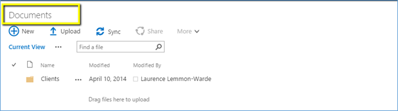
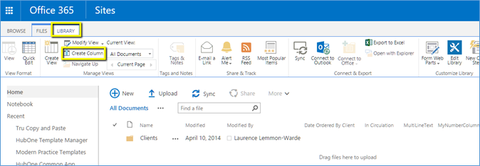
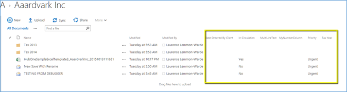
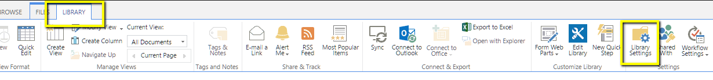
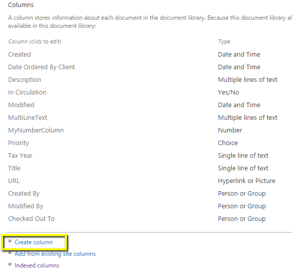
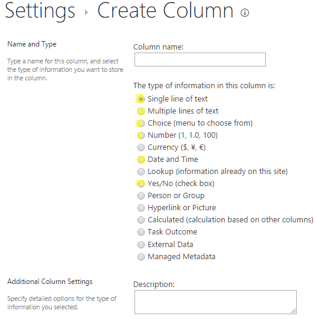
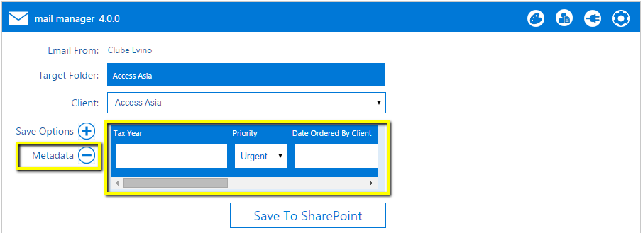
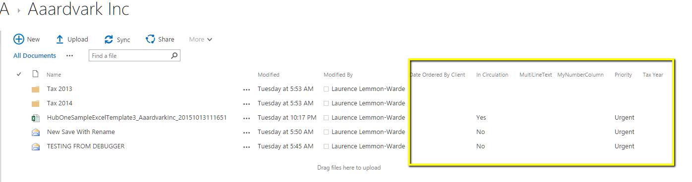

|
<< Click to Display Table of Contents >> Navigation: OnePractice > Mail Manager > Using OnePractice Mail Manager > Adding custom metadata to your document > Create custom data columns in SharePoint |
To create metadata columns for your emails in SharePoint you will need to perform the following simple tasks:
There are two ways to add custom columns, the first being the quickest.
Directly from the Document Library
1.Navigate to the Document Center in SharePoint
2.Navigate to the Document Library by clicking the “Documents” link.

3.Click the LIBRARY Tab and then select Create Column

4.Enter a column name and then select the type of metadata column you wish to append to your documents. Template Manager currently only caters for Text, Multiline Text, Choice, Number, Date and Yes/No column types. Examples of custom columns could include Tax Year, Priority, Filed at ATO or similar.
5.The column will automatically appear in your default view.

From Site Contents
1.Navigate to your Site Contents in your OnePractice Portal Document Center in SharePoint by clicking the cog icon at the top right of your browser window.
2.Select the Documents Library
3.Select the Library Tab and then click Library Settings

4.Under the Columns heading select Create column
5.Enter a column name and then select the type of metadata column you wish to append to your documents. Template Manager currently only caters for Text, Multiline Text, Choice, Number, Date and Yes/No column types. Examples of custom columns could include Tax Year, Priority, Filed at ATO or similar.

6.These custom columns will now appear in the Mail Manager after you hit the refresh button () in the Controls Bar.
7.Now, before you save the email, if you wish to add this extra data, click the Metadata button to display all your custom fields.
8.Enter your custom data and this data will be filed against your document.

9.To view your new custom columns in SharePoint you will need to add them to your default view in SharePoint.
10.To do this navigate back to Site Contents and select the Library Tab. Now select Modify View and add the newly created columns to your default view.
11.Refresh your page and the new columns will appear as in the image below
